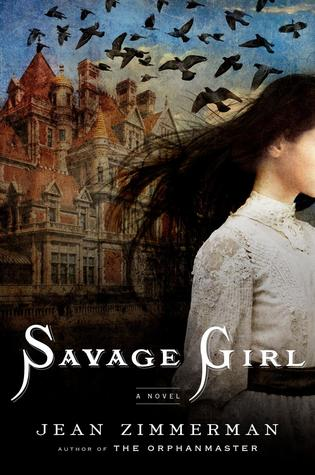

Fiction, Historical
The Midnight Queen

Savage Girl

A well crafted and magical story that will keep you hooked until the very end. A hidden gem in the fantasy genre.
In the hallowed halls of Oxford’s Merlin College, the most talented—and highest born—sons of the Kingdom of Britain are taught the intricacies of magickal theory. But what dazzles can also destroy, as Gray Marshall is about to discover…
Gray’s deep talent for magick has won him a place at Merlin College. But when he accompanies four fellow students on a mysterious midnight errand that ends in disaster and death, he is sent away in disgrace—and without a trace of his power. He must spend the summer under the watchful eye of his domineering professor, Appius Callender, working in the gardens of Callender’s country estate and hoping to recover his abilities. And it is there, toiling away on a summer afternoon, that he meets the professor’s daughter.
Even though she has no talent of her own, Sophie Callender longs to be educated in the lore of magick. Her father has kept her isolated at the estate and forbidden her interest; everyone knows that teaching arcane magickal theory to women is the height of impropriety. But against her father’s wishes, Sophie has studied his ancient volumes on the subject. And in the tall, stammering, yet oddly charming Gray, she finally finds someone who encourages her interest and awakens new ideas and feelings.
Sophie and Gray’s meeting touches off a series of events that begins to unravel secrets about each of them. And after the king’s closest advisor pays the professor a closed-door visit, they begin to wonder if what Gray witnessed in Oxford might be even more sinister than it seemed. They are determined to find out, no matter the cost…
Savage Girl is a mysterious and dark historical fiction woven with family scandal, murder, and a haunting romance.
Jean Zimmerman’s spectacular follow-up to The Orphanmaster has it all: Gilded Age romance, robber baron excess, detective story suspense, and a compelling female protagonist whom readers will fall in love with.
In 1875, the Delegates, an outlandishly wealthy Manhattan couple on a tour of the American West, seek out a sideshow attraction called “Savage Girl.” Her handlers avow that the wild, seemingly mute Bronwyn has been raised by wolves. Presented with the perfect blank slate to explore the power of civilized nurture, the Delegates take her back east to be introduced into high society. Cleaned up, Bronwyn is blazingly smart and darkly beautiful; as she takes steps toward her grand debut, a series of suitors find her irresistible—and begin to turn up murdered.
Fiction, Historical, Mystery/Thriller